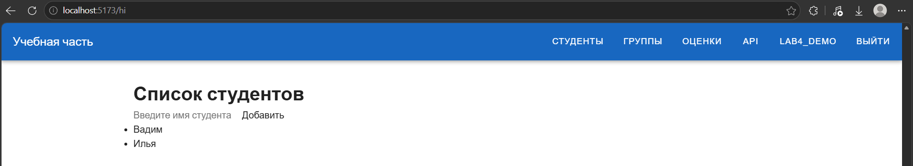
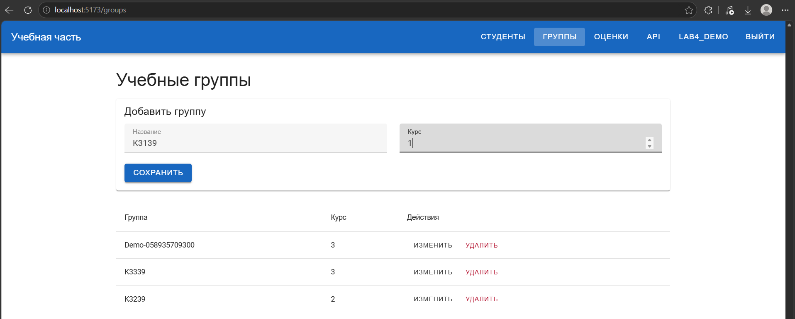
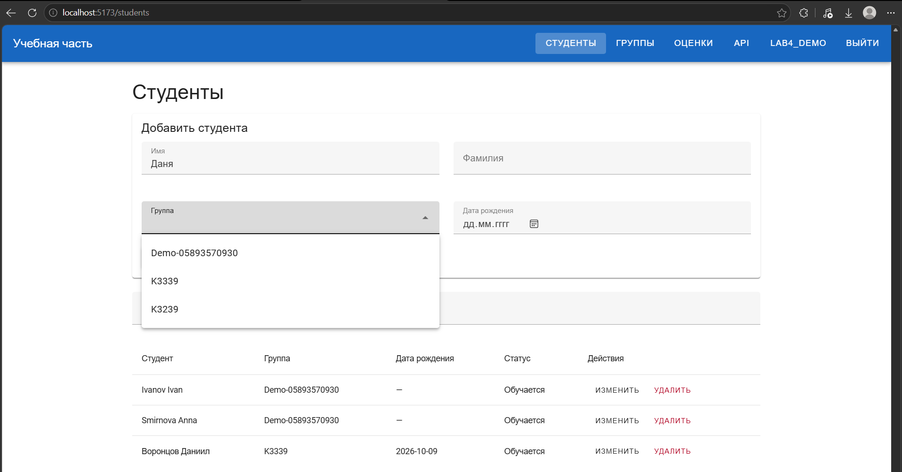
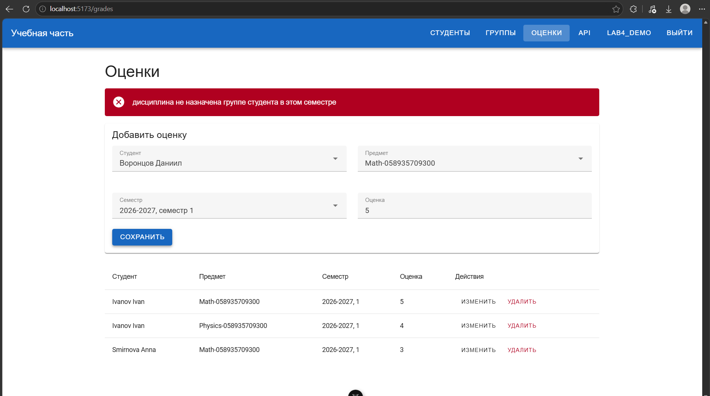
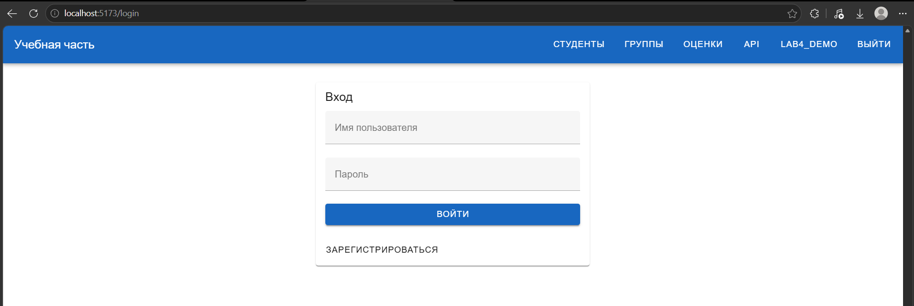
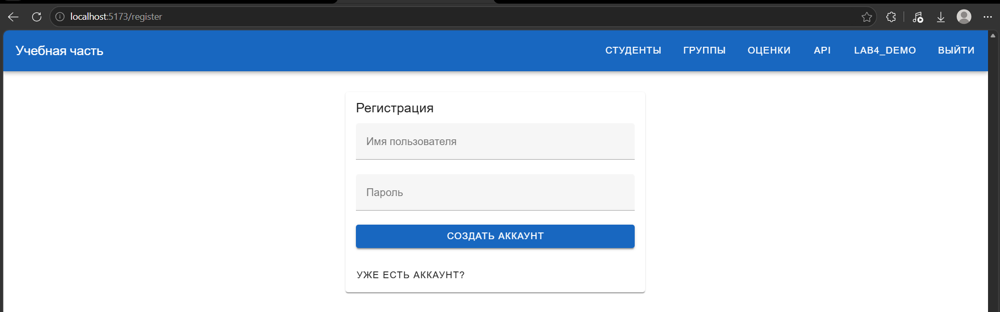
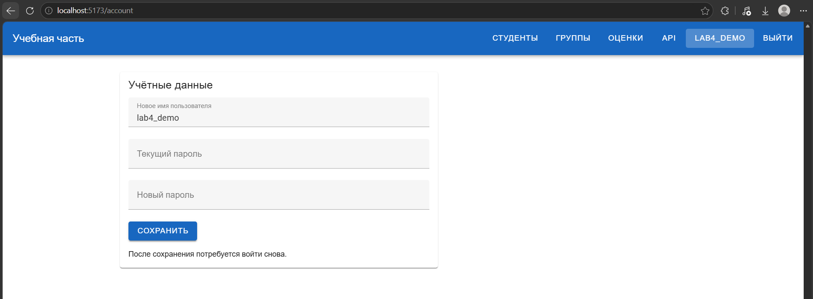
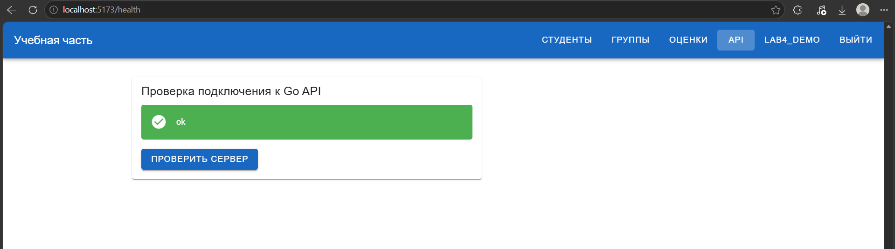
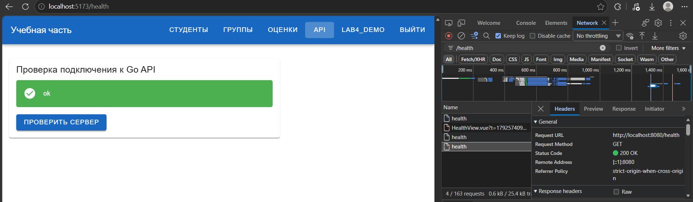
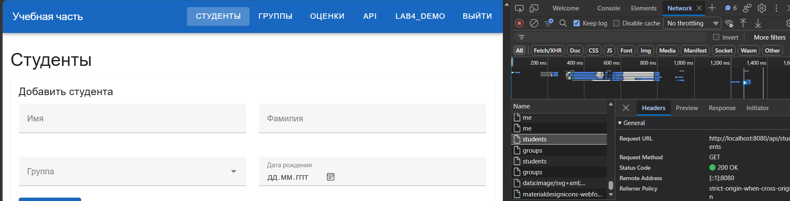

Лабораторная работа №4¶
Вариант 12. Учебная часть колледжа¶
В четвёртой работе сделана клиентская часть для API из ЛР3. Приложение написано на Vue 3. Для переходов между страницами используется Vue Router, для запросов Axios, для оформления Vuetify.
Task 1. Проект¶
Клиент находится в laboratory_work_4/frontend. Основные файлы:
frontend/src/
├── components/
│ ├── Hello.vue
│ ├── StudentForm.vue
│ └── StudentList.vue
├── views/
│ ├── AuthView.vue
│ ├── AccountView.vue
│ ├── StudentsView.vue
│ ├── GroupsView.vue
│ ├── GradesView.vue
│ └── HealthView.vue
├── router/index.js
├── services/api.js
├── services/auth.js
├── App.vue
└── main.js
App.vue содержит верхнее меню и место для страниц (RouterView). Компоненты студентов вынесены отдельно от страницы списка.
| Адрес | Страница |
|---|---|
/hi |
Первый пример компонента Vue |
/register, /login |
Регистрация и вход |
/students |
Студенты |
/groups |
Группы |
/grades |
Оценки |
/account |
Изменение учётных данных |
/health |
Проверка сервера |
Практика 4.2. Vue.js¶
Сначала сделал компонент Hello.vue: поле ввода и список имён. Для списка используется v-for, для поля v-model. Затем сделал StudentForm.vue и StudentList.vue. Форма передаёт данные странице через событие save, а страница загружает студентов и группы из API.
Пример загрузки данных в StudentsView.vue:
const [studentsResponse, groupsResponse] = await Promise.all([
api.get('/api/students'),
api.get('/api/groups')
])
students.value = studentsResponse.data
groups.value = groupsResponse.data
Для студентов доступны добавление, изменение, удаление и поиск по имени или фамилии. Группы и оценки также можно просматривать и изменять. При выставлении оценки студент, предмет и семестр выбираются из данных сервера.
Первый компонент со списком имён:

Форма и таблица учебных групп:

На странице студентов группа выбирается из списка, полученного от API:

Сервер проверяет связь оценки с назначенной группе дисциплиной. На снимке видны уже сохранённые оценки и сообщение об ошибке при попытке добавить оценку по неподходящей дисциплине:

Авторизация¶
При регистрации отправляются имя пользователя и пароль. После входа сервер возвращает auth_token. Axios добавляет его к запросам в заголовке Authorization: Token .... Страницы с учебными данными открываются после входа.
На странице профиля можно изменить имя пользователя и пароль. Для этого в Go API добавлен PATCH /api/auth/users/me с проверкой текущего пароля. После изменения токены пользователя удаляются, поэтому нужно войти снова.
Формы входа и регистрации:


Форма изменения учётных данных:

Практика 4.3. CORS и запросы к серверу¶
Vue работает на http://localhost:5173, а Go API на http://localhost:8080. Чтобы браузер разрешал запросы между ними, в laboratory_work_3/cmd/server/main.go добавлена обработка CORS:
w.Header().Set("Access-Control-Allow-Origin", "http://localhost:5173")
w.Header().Set("Access-Control-Allow-Methods", "GET, POST, PUT, PATCH, DELETE, OPTIONS")
w.Header().Set("Access-Control-Allow-Headers", "Content-Type, Authorization")
if r.Method == http.MethodOptions {
w.WriteHeader(http.StatusNoContent)
return
}
Проверка на странице /health выполняет GET /health. Сервер отвечает:
{"status":"ok"}
В ответе на запрос с источника Vue есть заголовок Access-Control-Allow-Origin: http://localhost:5173. После входа также успешно загружаются списки студентов, групп и оценок.
Страница проверки соединения показывает ответ сервера:

Во вкладке Network запрос /health завершается со статусом 200 OK:

После входа запрос списка студентов также возвращает 200 OK:

Результат¶
Клиент обращается к существующим маршрутам ЛР3. Сборка Vue и проверка ESLint проходят. Отклик /health и загрузка списков из Go API проверены на запущенном сервере.